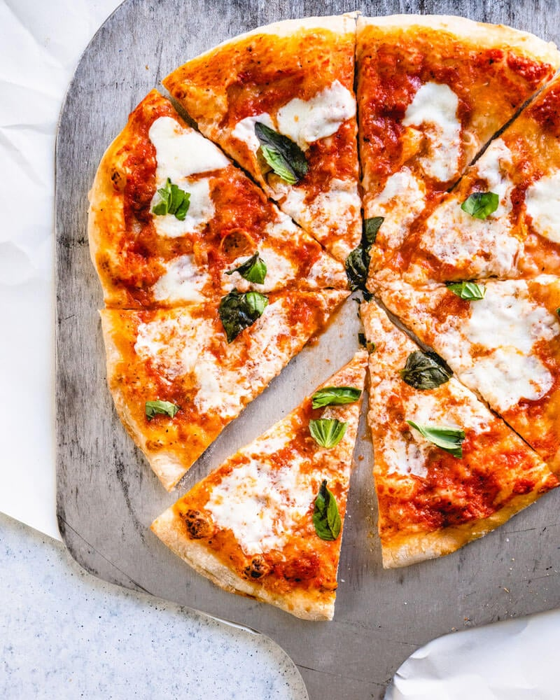

Homemade Margherita Pizza

Description
The ultimate pizza pie - pristine and simple pizza Margherita
Ingredients
For the pizza dough
- 1 ball Best Pizza Dough (or Food Processor Dough or Thin Crust Dough)
- Semolina flour or cornmeal, for dusting the pizza peel
For the pizza sauce
- 1 small garlic clove (1/2 medium)
- 15 ounces crushed fire roasted tomatoes or San Marzano tomatoes
- 1 tablespoon extra virgin olive oil
- ½ teaspoon dried oregano
- Scant ½ teaspoon kosher salt
For the toppings
- 1/4 to 1/3 cup pizza sauce
- ¾ cup shredded mozzarella cheese or 2 to 3 ounces fresh mozzarella cheese
- Parmesan cheese, for topping
- Fresh basil leaves, for garnish
Steps
- Make the pizza dough: Follow the Best Pizza Dough recipe to prepare the dough (This takes about 15 minutes to make and 45 minutes to rest.)
- Place a pizza stone in the oven and preheat to 500°F. OR preheat your pizza oven.
- Make the pizza sauce: ut the garlic into a few rough pieces. Place the garlic, tomatoes, olive oil, oregano and kosher salt in a blender. Blend until fully combined. (You’ll use about ⅓ cup for the pizza; reserve the remaining sauce and refrigerate for up to 1 week.)
- Prepare the cheese:f using fresh mozzarella cheese, slice it into ¼ inch thick pieces. If it’s incredibly watery fresh mozzarella (all brands vary), you may want to let it sit on a paper towel to remove moisture for about 15 minutes then dab the mozzarella with the paper towel to remove any additional moisture.
- Bake the pizza:When the oven is ready, dust a pizza peel with cornmeal or semolina flour. (If you don’t have a pizza peel, you can use a rimless baking sheet or the back of a rimmed baking sheet. But a pizza peel is well worth the investment!) Stretch the dough into a circle. Then gently place the dough onto the pizza peel.
- Spread a thin layer of the pizza sauce over the dough, using about ¼ to ⅓ cup. Add the mozzarella cheese. Top with a thin layer of fresh grated Parmesan cheese and a few pinches of kosher salt.
- Use the pizza peel to carefully transfer the pizza onto the preheated pizza stone. Bake the pizza until the cheese and crust are nicely browned, about 5 to 7 minutes in the oven (or 1 minute in a pizza oven).
- Allow the pizza to cool for a minute or two before adding the basil on top (whole leaves, lightly torn, or thinly sliced). Slice into pieces and serve immediately.